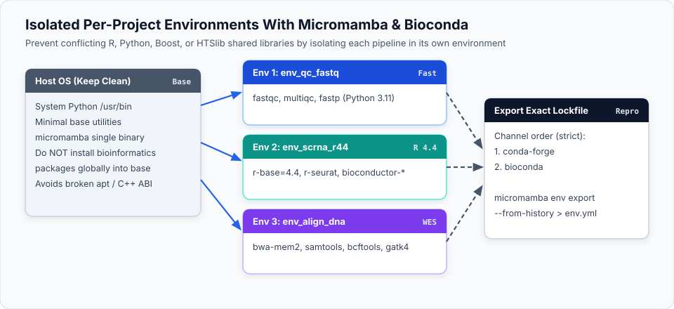
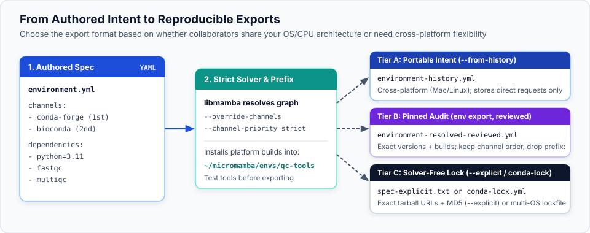

Micromamba Environments for Bioinformatics
Nasir Mahmood Abbasi, PhD
Bioinformatics Educator

Build and verify isolated Micromamba environments from an explicit environment.yml file so bioinformatics tools never collide with your system Python or older projects.
Format: Hands-on lab (25-35 minutes). Install Micromamba, build a clean FastQC + MultiQC environment from an explicit environment.yml, test the executables, and export reproducible lock specs in your terminal. This lab focuses strictly on environment isolation and needs no sequencing data files.
Learning Objectives & Prerequisites
- Prerequisites: Basic terminal navigation (creating folders and editing files) and write permission in your home directory (
$HOME). Windows users have a dedicated PowerShell install block below. - What you will learn: How to install Micromamba without polluting system Python, enforce safe
conda-forgeandbiocondachannel priority, write and test anenvironment.ymlfile, export portable vs. locked specifications, and fix common solver or shell errors. - Outcome: A verified
qc-toolsenvironment (Python 3.11, FastQC, MultiQC) backed by an authoredenvironment.ymland a reviewed lock snapshot.
Required route: Follow Install Micromamba (if needed), read the channel policy, and complete the small QC environment lab to build and verify qc-tools. The standalone reference examples in between are alternative patterns, not extra steps to run in sequence (several reuse environment names for illustration). Learners arriving from Command Line Part 2 only need the installation step before returning to its SeqKit checkpoint.
Why environment management matters in bioinformatics
A typical genomics workflow mixes command-line C/C++ binaries (such as samtools or bwa-mem2), Java tools (fastqc), Python packages (multiqc, scanpy), and R/Bioconductor libraries (Seurat). Many of these rely on specific versions of shared system libraries such as zlib, libdeflate, openssl, or htslib. Installing everything into the operating system's Python or a single global environment causes version collisions: upgrading a library for a new single-cell project can silently break an older RNA-seq pipeline.
An environment (also called a prefix) is an isolated directory containing its own Python or R interpreter, executables, and compiled libraries. Updating or deleting one prefix leaves every other project and your host operating system untouched.

An environment specification records the software layer of your analysis. Pair it with your workflow scripts, reference genome versions, and run parameters so another researcher (or your future self) can inspect and rebuild the computational stack on a different machine.
Which package manager should you use?
Choose one primary environment manager per project and stick with the tooling a project already declares. Never run bare global pip install commands outside an active virtual or Conda-compatible environment, and never override a project's existing lockfile with a competing manager.
| Tool | Best for | Key trade-off |
|---|---|---|
| Micromamba (recommended here) | Bioinformatics workflows mixing Python, R, Java, and compiled C/C++ Bioconda tools; HPC clusters and containers. | Single static binary with no pre-populated base environment; stores prefixes under MAMBA_ROOT_PREFIX. |
| Miniforge / Conda | Systems or pipelines (such as Snakemake/Nextflow configs) that specifically invoke the conda command. |
Larger initial installation than Micromamba; modern Conda uses libmamba as its default solver. |
| Mamba 2 | Users who prefer the mamba command name with Micromamba behavior. |
In Mamba 2.x, mamba shares Micromamba's C++ CLI directly. Ignore older guides that install Python Mamba into base. |
venv + pip or uv / Poetry |
Pure-Python repositories that already ship uv.lock (uv sync), pyproject.toml (poetry install), or requirements.txt (python3 -m venv .venv and .venv/bin/pip install -r requirements.txt). |
Cannot install non-Python bioinformatics binaries like fastqc or samtools. |
Install Micromamba
The official installer downloads a single static binary over HTTPS and configures your shell startup file so micromamba activate can update your PATH. On a managed institutional workstation or HPC cluster, first check module avail micromamba or command -v micromamba before installing a private copy.
Linux, macOS, or Git Bash
# Install Micromamba using the official installer script
"${SHELL}" <(curl -L micro.mamba.pm)
# Open a new shell (or source your RC file), then check the binary
micromamba --version
# If you skipped shell initialization during install, initialize Bash explicitly
micromamba shell init -s bash -r "$HOME/micromamba"
source "$HOME/.bashrc"
# For Zsh (default on macOS), initialize ~/.zshrc instead:
# micromamba shell init -s zsh -r "$HOME/micromamba"
# source "$HOME/.zshrc"If institutional firewalls block script execution from curl, download the static binary directly from the official Micromamba manual installation guide and place it in ~/.local/bin.
Windows PowerShell
# Official PowerShell installer
Invoke-Expression ((Invoke-WebRequest -Uri https://micro.mamba.pm/install.ps1 -UseBasicParsing).Content)
# Initialize PowerShell with a user-owned root prefix
micromamba shell init -s powershell -r "$HOME\micromamba"
# Restart PowerShell, then verify
micromamba --versionVerify the installation and root prefix
Run micromamba info right after installation. It confirms your binary version, architecture (platform), package cache location, and active config files.
micromamba --version
micromamba infoExample output (illustrative on Linux x86_64):
2.9.0
libmamba version : 2.9.0
micromamba version : 2.9.0
envs directories : /home/analyst/micromamba/envs
package cache : /home/analyst/micromamba/pkgs
environment : base (active)
env location : /home/analyst/micromamba
user config files : /home/analyst/.mambarc
virtual packages : __unix=0=0
__linux=6.8.0=0
__glibc=2.39=0
__archspec=1=x86_64
base environment : /home/analyst/micromamba
platform : linux-64Check: Confirm envs directories points to a directory you own with enough free disk space, and note your platform (linux-64 on standard Linux servers, osx-arm64 on Apple Silicon Macs, osx-64 on Intel Macs).
Configure channels deliberately
A channel is a remote package repository. In bioinformatics, two community channels work together: conda-forge supplies core compilers, Python, R, and shared C/C++ libraries, while bioconda supplies domain tools such as fastqc, multiqc, samtools, and Bioconductor packages.
Channel order and priority are critical because Bioconda recipes are built against conda-forge shared libraries. Under strict channel priority, once a package name exists in a higher-priority channel, the solver (the dependency-resolution engine) ignores builds of that package in all lower-priority channels. Putting conda-forge first and bioconda second prevents binary ABI mismatches, such as a tool expecting a conda-forge build of libdeflate receiving an incompatible build from another channel.
Every micromamba create command in this tutorial passes --override-channels -c conda-forge -c bioconda --channel-priority strict explicitly rather than relying on a global .condarc or .mambarc:
--override-channelsprevents configured default channels from silently joining the solve (in particular, it blocks Anacondadefaults).-c conda-forge -c biocondaputsconda-forgeat highest priority, followed bybioconda.--channel-priority strictforbids mixing builds of the same dependency across channels.
micromamba create -n qc-demo-channels \
--override-channels -c conda-forge -c bioconda --channel-priority strict \
fastqc multiqcWhen a solve fails, resist the urge to add extra channels or drop strict priority. First check package availability, spelling, platform support, and version pins.
Create, activate, and inspect environments
Create one environment per coherent workflow and keep your root prefix empty of analysis tools. The quick reference below shows the lifecycle commands using an illustrative name qc-demo-basic (you can skip running this block and jump straight to qc-tools in the required lab).
# Install the initial package set together so the solver sees all constraints at once
micromamba create -n qc-demo-basic \
--override-channels -c conda-forge -c bioconda --channel-priority strict \
python=3.11 fastqc multiqc
# Activate the environment in the current shell
micromamba activate qc-demo-basic
# Confirm that executables resolve from the environment prefix, not /usr/bin
which python
python --version
which fastqc
fastqc --version
# List available environments and deactivate when done
micromamba env list
micromamba deactivateExample output (illustrative):
/home/analyst/micromamba/envs/qc-demo-basic/bin/python
Python 3.11.17
/home/analyst/micromamba/envs/qc-demo-basic/bin/fastqc
FastQC v0.13.0
Name Active Path
------------------------------------------------------------------
base /home/analyst/micromamba
qc-demo-basic * /home/analyst/micromamba/envs/qc-demo-basicCheck: which python must print a path inside envs/qc-demo-basic/bin/. If it still prints /usr/bin/python, activation did not run.
Use a project-local prefix when appropriate
Named environments live together under ~/micromamba/envs/, which is convenient on a laptop. A project-local prefix (-p ./env) places the binaries inside the project folder itself, keeping disk usage obvious on shared lab storage. Add env/ to .gitignore so binaries are never committed to Git.
mkdir -p ~/projects/qc-demo
cd ~/projects/qc-demo
micromamba create -p ./env \
--override-channels -c conda-forge -c bioconda --channel-priority strict \
python=3.11 fastqc
micromamba activate ./env
micromamba deactivateOptional cleanup after you finish
Skip removal commands while you still need the environment. Before deleting any environment, confirm no scheduled cluster job or Jupyter kernel points to it:
micromamba env remove -n qc-tools
# For a project-local prefix environment:
# micromamba env remove -p ./envOptional reference: combine Python, R, and command-line tools
Skip this section for the required QC lab; it is not needed for the Bash lessons, SeqKit setup or the authored YAML exercise. When a real project spans R (r-seurat), Python (scanpy), and compiled CLI tools (samtools), Micromamba can manage all three together because CRAN packages carry an r- prefix and Bioconductor packages carry a bioconductor- prefix.
micromamba create -n single-cell \
--override-channels -c conda-forge -c bioconda --channel-priority strict \
python=3.11 \
scanpy anndata \
r-base r-seurat \
samtools bcftools multiqc
micromamba activate single-cell
python -c "import scanpy, anndata; print(scanpy.__version__, anndata.__version__)"
R --no-echo -e "cat(R.version.string, '\n')"
samtools --version | head -n 1When a Python package is only on PyPI
Always prefer Conda/Bioconda builds for packages with compiled C/C++ extensions. When a pure-Python tool is only published on PyPI, include pip in your environment.yml and place PyPI packages inside a nested - pip: block. Micromamba installs all Conda/Bioconda dependencies first, then runs the isolated environment's pip:
name: single-cell-with-pypi
channels:
- conda-forge
- bioconda
- nodefaults
dependencies:
- python=3.11
- pip
- scanpy
- anndata
- pip:
- some-pypi-only-tool==1.2.0If you must add a PyPI-only package interactively inside an already active Micromamba environment, verify which python points inside the environment prefix and run python -m pip install <package> rather than bare global pip install. Conversely, if you are working in a pure-Python repository that already tracks dependencies with uv.lock, pyproject.toml, or requirements.txt, use that project's native tool (uv sync, poetry install, or python3 -m venv .venv + .venv/bin/pip install -r requirements.txt) instead of creating a redundant Conda environment.
Required lab: make a small QC environment reproducible
In this hands-on lab, you will write a clean environment.yml, solve and test a qc-tools environment, export a pinned snapshot, catch a real channel-ordering pitfall before recreating it as qc-tools-copy, and save both portable and exact lock artifacts.
Step 1: Author environment.yml
Create a dedicated project folder and write an intentional authored request using a shell here-document. Adding - conda-forge above - bioconda encodes your channel preference directly in the file.
mkdir -p ~/projects/qc-environment
cd ~/projects/qc-environment
pwd
cat > environment.yml <<'YAML'
name: qc-tools
channels:
- conda-forge
- bioconda
dependencies:
- python=3.11
- fastqc
- multiqc
YAMLBefore running the solver, predict: which Python minor version is requested, and why are no exact build hashes listed yet? Confirm the file contents exactly match what you wrote:
ls -l environment.yml
sed -n '1,20p' environment.ymlOutput from inspecting the saved file:
name: qc-tools
channels:
- conda-forge
- bioconda
dependencies:
- python=3.11
- fastqc
- multiqcStep 2: Create the environment from the authored request
Writing environment.yml saves your intent, not a solved environment. Run the create command below (micromamba env create -f is an equivalent alias) with strict channel flags so the solver resolves compatible builds for your OS and CPU architecture:
micromamba create -f environment.yml --override-channels -c conda-forge -c bioconda --channel-priority strictIf this fails: Stop here, inspect the solver error, and verify your channels and platform with micromamba info before running later steps.
Step 3: Verify the environment and executables
Confirm that qc-tools appears in your environment list and that Python, FastQC, and MultiQC each execute cleanly via micromamba run:
micromamba env list
micromamba run -n qc-tools python --version
micromamba run -n qc-tools fastqc --version
micromamba run -n qc-tools multiqc --versionExample output (illustrative):
Python 3.11.17
FastQC v0.13.0
multiqc, version 1.35Step 4: Export, review, and recreate under a fresh name
Exporting the solved environment captures every transitive dependency and its exact version and build string. Keep the raw export as an audit log, copy it to a reviewed file, and inspect the header before recreating:
micromamba env export -n qc-tools > environment-resolved.yml
cp environment-resolved.yml environment-resolved-reviewed.yml
sed -n '1,12p' environment-resolved-reviewed.ymlWhy review before recreating? An export can reorder channels (for example, listing bioconda before conda-forge) and appends a machine-local prefix: path at the bottom. Open environment-resolved-reviewed.yml in a text editor, make its channels: block match the three lines below, keep every dependency line intact, and remove any top-level prefix: line (this snippet is only the header block):
channels:
- conda-forge
- biocondaVerify your edit with grep -E '^(name|channels|prefix):|conda-forge|bioconda' environment-resolved-reviewed.yml, then recreate the environment under a distinct unused name (qc-tools-copy) to confirm the pinned file resolves cleanly:
micromamba create -n qc-tools-copy -f environment-resolved-reviewed.yml --override-channels -c conda-forge -c bioconda --channel-priority strict
micromamba run -n qc-tools-copy python --version
micromamba run -n qc-tools-copy fastqc --version
micromamba run -n qc-tools-copy multiqc --version
micromamba env listCheck: Both qc-tools and qc-tools-copy appear in micromamba env list, and all three version commands succeed. Note that recreating from a reviewed YAML still runs a fresh solve on this platform rather than bypassing the solver. Compare your observed Python version (3.11.x) with your prediction from Step 1.
Small variation (optional check): Copy environment.yml to environment-py312.yml, change only python=3.11 to python=3.12, and solve into a distinct test name (for example qc-tools-py312) using the same strict channel flags. If a package in the graph lacks a Python 3.12-compatible build on your platform, the solver will report which constraint failed rather than silently downgrading channels. Restore your working environment.yml rather than loosening channel priority.
Step 5: Choose the right export artifact for sharing
Different sharing scenarios call for different export formats. You can generate both a minimal intent file and a solver-free explicit lockfile from qc-tools:
micromamba env export -n qc-tools --from-history > environment-history.yml
micromamba env export -n qc-tools --explicit > spec-explicit.txt
environment.yml alongside either a cross-platform intent export (--from-history) or a platform lockfile (--explicit or conda-lock).--from-history(environment-history.yml): Stores only packages you requested directly, making it clean and portable across macOS and Linux.- Reviewed
env export(environment-resolved-reviewed.yml): Pins exact versions and build strings for human-readable auditing on the same OS/architecture. --explicit(spec-explicit.txt): Starts with@EXPLICITand lists exact tarball URLs and MD5 hashes for fast, solver-free rebuilds on the same OS and CPU (pass--file spec-explicit.txtwhen provisioning a new prefix).conda-lock(conda-lock.yml): Pre-solves exact lockfiles across multiple platforms (such asosx-arm64laptops andlinux-64HPC nodes) in one file.
Use the environment in scripts and HPC jobs
Shell activation (micromamba activate) modifies your interactive shell's PATH via a shell function. Non-interactive batch scripts (such as Slurm job scripts) often skip ~/.bashrc, so either invoke single commands with micromamba run or load the shell hook in memory before activating:
# Option A: run a single command without shell activation
micromamba run -n qc-tools fastqc --help
# Option B: load the shell hook in memory inside a Bash script (safe on shared clusters)
eval "$(micromamba shell hook -s bash)"
micromamba activate qc-tools
multiqc --versionAvoid writing temporary shell hooks into shared /tmp paths on multi-user systems, and avoid hardcoding personal /home/username paths in shared pipeline scripts. Log tool versions (fastqc --version, multiqc --version) at the start of every batch run.
Troubleshoot systematically
Error: critical libmamba Shell not initialized or command not found
Cause: Your current shell cannot find the micromamba binary or has not loaded the activation shell function.
command -v micromamba
micromamba info
micromamba shell -h
# Temporary fix for the current Bash session:
eval "$(micromamba shell hook -s bash)"
# Permanent fix for interactive Bash sessions:
micromamba shell init -s bash -r "$HOME/micromamba"
exec bashOn HPC clusters, login shells and batch shells may read different startup files (~/.bash_profile vs. ~/.bashrc); using eval "$(micromamba shell hook -s bash)" or micromamba run inside job scripts avoids startup-file mismatches.
Error: Could not solve for environment specs
Cause: Requested versions conflict, a channel is missing or misordered, or a Bioconda package lacks a build for your CPU architecture (common on Apple Silicon osx-arm64 Macs for older tools).
# Inspect current channel config and platform
micromamba config list
micromamba info
# Test a solve without downloading or installing anything
micromamba create -n qc-dry-run --override-channels -c conda-forge -c bioconda --channel-priority strict \
python=3.11 fastqc --dry-run
# Verify package availability and supported architectures
micromamba search -c conda-forge -c bioconda fastqcFixes:
- Confirm
conda-forgecomes beforebiocondaand strict priority is enabled. - Remove overly tight patch pins (e.g., use
python=3.11instead ofpython=3.11.2). - Apple Silicon (
osx-arm64) Macs: If a Bioconda package only has Intel (osx-64) builds, create a dedicated emulated environment (with Rosetta 2 installed) using--platform osx-64and keep it separate from native ARM64 environments.
Runtime crashes after mixing pip and Conda-compatible packages
Cause: Running bare global pip install or letting pip overwrite a compiled Conda library (such as numpy or scipy) breaks binary compatibility even if the environment still activates.
Fix: Install compiled packages with Micromamba first, declare PyPI-only packages under pip: in environment.yml, and check which python before running python -m pip install.
Error: No space left on device or HPC home quota exceeded
Cause: Conda/Bioconda archives accumulate in package cache inside $HOME/micromamba/pkgs, which quickly fills small HPC home quotas.
# Inspect cache and environment paths first
micromamba info
# Remove unused tarballs and unreferenced packages
micromamba clean --all
# Check disk space and HPC quota
df -h "$HOME"
quota -s 2>/dev/null || trueNever use sudo to install into a user-owned prefix. On a cluster with a tight home quota, initialize Micromamba with -r /project/your_group/$USER/micromamba (or your cluster's recommended scratch/project storage path).
Optional alternative: two fresh solves from the authored request
If you want an automated script that verifies your authored environment.yml solves cleanly twice from scratch without manual editing, use the script below. Unlike Step 4, the second environment solves directly from environment.yml rather than pinned build strings.
set -euo pipefail
test -s environment.yml
micromamba create -n reproducible-qc -f environment.yml \
--override-channels -c conda-forge -c bioconda --channel-priority strict \
-y
micromamba run -n reproducible-qc python --version
micromamba run -n reproducible-qc fastqc --version
micromamba run -n reproducible-qc multiqc --version
micromamba env export -n reproducible-qc > reproducible-qc-resolved.yml
# Fresh solve from the authored request, not the unreviewed export.
micromamba create -n reproducible-qc-copy -f environment.yml \
--override-channels -c conda-forge -c bioconda --channel-priority strict -y
micromamba run -n reproducible-qc-copy python --version
micromamba run -n reproducible-qc-copy fastqc --version
micromamba run -n reproducible-qc-copy multiqc --version
echo "Environment verification completed: $(date -Iseconds)"Practical checklist
- Use one primary manager per project and keep your
base/ root prefix clean. - Create one small environment per workflow instead of one giant kitchen-sink environment.
- Enforce
conda-forgebeforebiocondawith--override-channelsand--channel-priority strict. - Request initial tools together, then verify executables with
whichand--version. - Keep your authored
environment.ymlalongside a reviewed or locked export (--from-history,--explicit, orconda-lock). - Use
micromamba runoreval "$(micromamba shell hook -s bash)"in batch scripts.
Next steps
Apply this environment pattern to the single-cell RNA-seq tutorial, the WES variant-calling pipeline, or the reproducible workflow tutorial.
References and further reading
Recorded Ubuntu x86_64 check: with Micromamba 2.9.0 and explicit strict channels, environment.yml solved cleanly and verified Python 3.11.17, FastQC 0.13.0, and MultiQC 1.35.
When the raw resolved export listed Bioconda before conda-forge, its fresh solve failed with a libdeflate build conflict; restoring conda-forge first and removing the prefix fixed it so fresh-name recreation and all three version checks then succeeded on the same host.
Knowledge Check & Practice
1. Channel priority diagnosis
Why should conda-forge appear above bioconda under strict channel priority, and what goes wrong if Anaconda defaults silently joins the solve?
Show answer
Bioconda packages are compiled against conda-forge shared C/C++ libraries (such as libdeflate, zlib, and openssl). Putting conda-forge first with strict priority ensures every shared dependency comes from conda-forge rather than mixing incompatible ABI builds from bioconda or defaults.
2. Practice exercise: author an alignment environment
Draft an environment.yml named align-dna with Python 3.11, samtools, and bcftools, then write the create command that guarantees no default channels interfere.
Show answer
Save environment.yml with name: align-dna, channels: [conda-forge, bioconda, nodefaults], and dependencies: [python=3.11, samtools, bcftools], then run micromamba create -f environment.yml --override-channels -c conda-forge -c bioconda --channel-priority strict and test with micromamba run -n align-dna samtools --version.
3. Troubleshooting a failed solve
Before deleting an environment or relaxing strict channel priority when a solve fails, which three diagnostic commands should you run?
Show answer
Run micromamba info (to check platform, root prefix, and config files), micromamba search -c conda-forge -c bioconda <pkg> (to confirm the package exists for your OS/CPU architecture), and add --dry-run to a minimal create command to isolate the conflicting pin.
Unpinned package requests resolve to current channel builds on your OS and CPU architecture at solve time. Save your resolved export and platform metadata alongside your project code, and re-check syntax against the linked official documentation. Found an error or an outdated flag? Please report it on the Contact page.
Author: Nasir Mahmood Abbasi, PhD - Category: Package Management